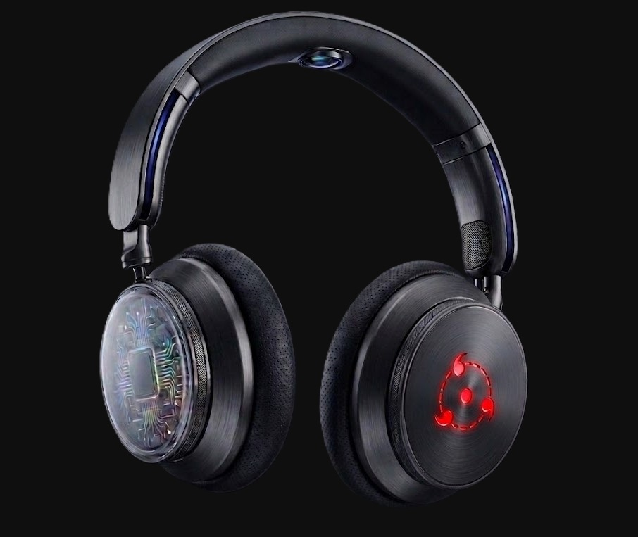

El sonido del futuro
Descubrí una experiencia inmersiva con los AstroX S1

Cancelación de ruido
Disfrutá tu música sin interrupciones.
Batería de 40h
Uso prolongado sin preocuparte por cargar.
Diseño premium
Comodidad y estilo futurista.
Audio inmersivo.
Disfrutá cada detalle con una calidad de sonido envolvente y cancelación activa de ruido.
Hasta 40 horas de batería.
Escuchá tu música durante días sin preocuparte por cargar.
Diseño premium y liviano.
Solo 243 gramos de comodidad y estilo futurista.